обложки нет
00 · длинный
Беседа целиком
Тексты для площадок
Текст
Беседа 8 ноября целиком - уже на канале отца Михаила на YouTube: https://www.youtube.com/watch?v=TyBzne6MH74
35 роликов, видео на Диске у 29. У каждого обложка и тексты: для Reels, YouTube Shorts и длинного YouTube. Собрано 23 ноября 2026.
Вся папка на Яндекс ДискеБеседа 8 ноября целиком - уже на канале отца Михаила на YouTube: https://www.youtube.com/watch?v=TyBzne6MH74
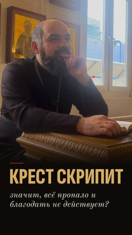
Несёшь крест неидеально - значит, всё пропало? Идеально свой крест не несёт никто: где-то поскрипываем, приходим, каемся - и несём дальше, не выпуская его из рук. «Кто не берёт креста и не идёт за Мной, тот не достоин Меня» - слова кажутся грубыми, пока не спросишь, в чём достоинство. А оно в том, чтобы ответить Богу взаимностью: Он первым пошёл на крест и просит нас взять свой маленький крестик, в нашу маленькую меру. «Помоги, пожалуйста, нести, дай силу, я иду. Ты впереди, а я позади Тебя». Кажется, что несёте свой крест плохо и всё уже пропало? Главное - не выпускать его из рук. Подпишитесь. #православие #вера #крест #покаяние #христианство
Несёшь крест неидеально - значит, всё пропало? #shorts
Идеально свой крест не несёт никто: где-то поскрипываем, приходим, каемся - и несём дальше, не выпуская его из рук. «Кто не берёт креста и не идёт за Мной, тот не достоин Меня» - слова кажутся грубыми, пока не спросишь, в чём достоинство. А оно в том, чтобы ответить Богу взаимностью: Он первым пошёл на крест и просит нас взять свой маленький крестик, в нашу маленькую меру. «Помоги, пожалуйста, нести, дай силу, я иду. Ты впереди, а я позади Тебя». Кажется, что несёте свой крест плохо и всё уже пропало? Главное - не выпускать его из рук. Подпишитесь. #православие #вера #крест #покаяние #христианство
православие, вера, крест, покаяние, христианство, отец Михаил, священник
Несёшь крест неидеально - значит, всё пропало?
Идеально свой крест не несёт никто: где-то поскрипываем, приходим, каемся - и несём дальше, не выпуская его из рук. «Кто не берёт креста и не идёт за Мной, тот не достоин Меня» - слова кажутся грубыми, пока не спросишь, в чём достоинство. А оно в том, чтобы ответить Богу взаимностью: Он первым пошёл на крест и просит нас взять свой маленький крестик, в нашу маленькую меру. «Помоги, пожалуйста, нести, дай силу, я иду. Ты впереди, а я позади Тебя». Кажется, что несёте свой крест плохо и всё уже пропало? Главное - не выпускать его из рук. Подпишитесь. #православие #вера #крест #покаяние #христианство
Несёшь крест неидеально - значит, всё пропало? Идеально свой крест не несёт никто: где-то поскрипываем, приходим, каемся - и несём дальше, не выпуская его из рук. «Кто не берёт креста и не идёт за Мной, тот не достоин Меня» - слова кажутся грубыми, пока не спросишь, в чём достоинство. А оно в том, чтобы ответить Богу взаимностью: Он первым пошёл на крест и просит нас взять свой маленький крестик, в нашу маленькую меру. «Помоги, пожалуйста, нести, дай силу, я иду. Ты впереди, а я позади Тебя». Кажется, что несёте свой крест плохо и всё уже пропало? Главное - не выпускать его из рук. Подпишитесь. #православие #вера #крест
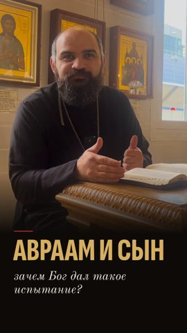
Зачем Бог дал Аврааму такое испытание - принести в жертву своего сына? Человека, пережившего невероятное горе, может понять только тот, кто сам знает эту боль. Господь хотел, чтобы Авраам сроднился Ему и понял Его: «Так возлюбил Бог мир, что отдал Сына Своего Единородного, дабы всякий верующий в Него не погиб, но имел жизнь вечную». А ещё - чтобы у Бога был повод ответить взаимностью. Читали о жертве Авраама и не могли понять, как Бог мог такого просить? #православие #вера #Авраам #Библия #христианство
Зачем Бог испытал Авраама сыном? #shorts
Зачем Бог дал Аврааму такое испытание - принести в жертву своего сына? Человека, пережившего невероятное горе, может понять только тот, кто сам знает эту боль. Господь хотел, чтобы Авраам сроднился Ему и понял Его: «Так возлюбил Бог мир, что отдал Сына Своего Единородного, дабы всякий верующий в Него не погиб, но имел жизнь вечную». А ещё - чтобы у Бога был повод ответить взаимностью. Читали о жертве Авраама и не могли понять, как Бог мог такого просить? #православие #вера #Авраам #Библия #христианство
православие, вера, Авраам, Библия, христианство, отец Михаил, священник
Зачем Бог испытал Авраама сыном?
Зачем Бог дал Аврааму такое испытание - принести в жертву своего сына? Человека, пережившего невероятное горе, может понять только тот, кто сам знает эту боль. Господь хотел, чтобы Авраам сроднился Ему и понял Его: «Так возлюбил Бог мир, что отдал Сына Своего Единородного, дабы всякий верующий в Него не погиб, но имел жизнь вечную». А ещё - чтобы у Бога был повод ответить взаимностью. Читали о жертве Авраама и не могли понять, как Бог мог такого просить? #православие #вера #Авраам #Библия #христианство
Зачем Бог дал Аврааму такое испытание - принести в жертву своего сына? Человека, пережившего невероятное горе, может понять только тот, кто сам знает эту боль. Господь хотел, чтобы Авраам сроднился Ему и понял Его: «Так возлюбил Бог мир, что отдал Сына Своего Единородного, дабы всякий верующий в Него не погиб, но имел жизнь вечную». А ещё - чтобы у Бога был повод ответить взаимностью. Читали о жертве Авраама и не могли понять, как Бог мог такого просить? #православие #вера #Авраам
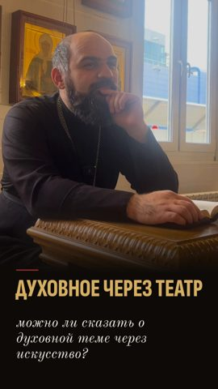
Что меня поразило в театре О духовном можно сказать и через театральную постановку. Я и сам не так давно открыл для себя этот жанр, а после театра «Живая вода» взглянул на него совсем по-другому. На их постановке о преподобном Гаврииле Ургебадзе я был раз пять. Не думали, что о святом можно услышать со сцены? #православие #вера #театр #ГавриилУргебадзе #ЖиваяВода
Что меня поразило в театре #shorts
О духовном можно сказать и через театральную постановку. Я и сам не так давно открыл для себя этот жанр, а после театра «Живая вода» взглянул на него совсем по-другому. На их постановке о преподобном Гаврииле Ургебадзе я был раз пять. Не думали, что о святом можно услышать со сцены? #православие #вера #театр #ГавриилУргебадзе #ЖиваяВода
православие, вера, театр, Гавриил Ургебадзе, Живая Вода, отец Михаил, священник
Что меня поразило в театре
О духовном можно сказать и через театральную постановку. Я и сам не так давно открыл для себя этот жанр, а после театра «Живая вода» взглянул на него совсем по-другому. На их постановке о преподобном Гаврииле Ургебадзе я был раз пять. Не думали, что о святом можно услышать со сцены? #православие #вера #театр #ГавриилУргебадзе #ЖиваяВода
Что меня поразило в театре О духовном можно сказать и через театральную постановку. Я и сам не так давно открыл для себя этот жанр, а после театра «Живая вода» взглянул на него совсем по-другому. На их постановке о преподобном Гаврииле Ургебадзе я был раз пять. Не думали, что о святом можно услышать со сцены? #православие #вера #театр
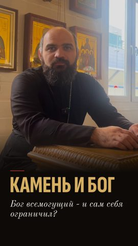
Когда христианство начало распространяться, греческие философы-многобожники пытались поддеть христиан: может ли ваш Бог создать камень, который не сможет поднять? Ответ - человеческая свобода: Бог чтит её и не нарушает. У Иоанна Дамаскина есть об этом слова: Бог всё может, но не всё, что может, хочет. Вас тоже ловили каверзным вопросом о вере, а ответ пришёл в голову только потом? #православие #вера #свобода #ИоаннДамаскин #христианство
Может ли Бог создать камень, который не сможет поднять? #shorts
Когда христианство начало распространяться, греческие философы-многобожники пытались поддеть христиан: может ли ваш Бог создать камень, который не сможет поднять? Ответ - человеческая свобода: Бог чтит её и не нарушает. У Иоанна Дамаскина есть об этом слова: Бог всё может, но не всё, что может, хочет. Вас тоже ловили каверзным вопросом о вере, а ответ пришёл в голову только потом? #православие #вера #свобода #ИоаннДамаскин #христианство
православие, вера, свобода, Иоанн Дамаскин, христианство, отец Михаил, священник
Может ли Бог создать камень, который не сможет поднять?
Когда христианство начало распространяться, греческие философы-многобожники пытались поддеть христиан: может ли ваш Бог создать камень, который не сможет поднять? Ответ - человеческая свобода: Бог чтит её и не нарушает. У Иоанна Дамаскина есть об этом слова: Бог всё может, но не всё, что может, хочет. Вас тоже ловили каверзным вопросом о вере, а ответ пришёл в голову только потом? #православие #вера #свобода #ИоаннДамаскин #христианство
Когда христианство начало распространяться, греческие философы-многобожники пытались поддеть христиан: может ли ваш Бог создать камень, который не сможет поднять? Ответ - человеческая свобода: Бог чтит её и не нарушает. У Иоанна Дамаскина есть об этом слова: Бог всё может, но не всё, что может, хочет. Вас тоже ловили каверзным вопросом о вере, а ответ пришёл в голову только потом? #православие #вера #свобода
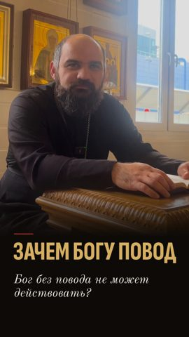
Чтобы вмешаться в то, что Им же установлено, Богу нужен повод. Главный повод спасения человечества и единственная причина, по которой человек теперь может спастись, - крестная жертва Христа. Ад не может Его удержать: дьявол не находит в Нём ничего своего. Христос выходит из ада и даёт нам путь - пойти за Ним через крест. Если Бог всемогущ, зачем Христу понадобился крест - задумывались? #православие #вера #крест #Пасха #христианство
Зачем Богу нужен повод? #shorts
Чтобы вмешаться в то, что Им же установлено, Богу нужен повод. Главный повод спасения человечества и единственная причина, по которой человек теперь может спастись, - крестная жертва Христа. Ад не может Его удержать: дьявол не находит в Нём ничего своего. Христос выходит из ада и даёт нам путь - пойти за Ним через крест. Если Бог всемогущ, зачем Христу понадобился крест - задумывались? #православие #вера #крест #Пасха #христианство
православие, вера, крест, Пасха, христианство, отец Михаил, священник
Зачем Богу нужен повод?
Чтобы вмешаться в то, что Им же установлено, Богу нужен повод. Главный повод спасения человечества и единственная причина, по которой человек теперь может спастись, - крестная жертва Христа. Ад не может Его удержать: дьявол не находит в Нём ничего своего. Христос выходит из ада и даёт нам путь - пойти за Ним через крест. Если Бог всемогущ, зачем Христу понадобился крест - задумывались? #православие #вера #крест #Пасха #христианство
Чтобы вмешаться в то, что Им же установлено, Богу нужен повод. Главный повод спасения человечества и единственная причина, по которой человек теперь может спастись, - крестная жертва Христа. Ад не может Его удержать: дьявол не находит в Нём ничего своего. Христос выходит из ада и даёт нам путь - пойти за Ним через крест. Если Бог всемогущ, зачем Христу понадобился крест - задумывались? #православие #вера #крест
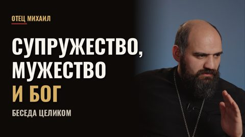
Супружество, мужество и Бог - беседа целиком Весь разговор целиком. Почему супруг - самый дорогой человек после Бога и как мы к нему относимся. Почему мужчина закаляется только в преодолении и какие слова монаха на Соловках до сих пор со мной: «Каждый день можно быть героем или подлецом». Почему с Богом можно быть только здесь и сейчас и что за упражнение «Бог, Который». Мальчик и девочка за одной партой, почему мужчина идёт изменять, что такое уныние и как от него оторваться. Почему настоящее супружество не уступает монашеству, за что Бог наказал Россию, почему делать зло легче, чем добро, при чём тут я и первородный грех и почему Бог не исцеляет всех в одно мгновение. В браке, в воспитании сына или в молитве что-то не складывается? Этот разговор обо всём этом. Подпишитесь. #православие #супружество #семья #вера #мужчина
Супружество, мужество и Бог - беседа целиком
Весь разговор целиком. Почему супруг - самый дорогой человек после Бога и как мы к нему относимся. Почему мужчина закаляется только в преодолении и какие слова монаха на Соловках до сих пор со мной: «Каждый день можно быть героем или подлецом». Почему с Богом можно быть только здесь и сейчас и что за упражнение «Бог, Который». Мальчик и девочка за одной партой, почему мужчина идёт изменять, что такое уныние и как от него оторваться. Почему настоящее супружество не уступает монашеству, за что Бог наказал Россию, почему делать зло легче, чем добро, при чём тут я и первородный грех и почему Бог не исцеляет всех в одно мгновение. В браке, в воспитании сына или в молитве что-то не складывается? Этот разговор обо всём этом. Подпишитесь. #православие #супружество #семья #вера #мужчина
православие, супружество, семья, вера, мужчина, отец Михаил, священник
Супружество, мужество и Бог - беседа целиком
Весь разговор целиком. Почему супруг - самый дорогой человек после Бога и как мы к нему относимся. Почему мужчина закаляется только в преодолении и какие слова монаха на Соловках до сих пор со мной: «Каждый день можно быть героем или подлецом». Почему с Богом можно быть только здесь и сейчас и что за упражнение «Бог, Который». Мальчик и девочка за одной партой, почему мужчина идёт изменять, что такое уныние и как от него оторваться. Почему настоящее супружество не уступает монашеству, за что Бог наказал Россию, почему делать зло легче, чем добро, при чём тут я и первородный грех и почему Бог не исцеляет всех в одно мгновение. В браке, в воспитании сына или в молитве что-то не складывается? Этот разговор обо всём этом. Подпишитесь. #православие #супружество #семья #вера #мужчина
Супружество, мужество и Бог - беседа целиком Весь разговор целиком. Почему супруг - самый дорогой человек после Бога и как мы к нему относимся. Почему мужчина закаляется только в преодолении и какие слова монаха на Соловках до сих пор со мной: «Каждый день можно быть героем или подлецом». Почему с Богом можно быть только здесь и сейчас и что за упражнение «Бог, Который». Мальчик и девочка за одной партой, почему мужчина идёт изменять, что такое уныние и как от него оторваться. Почему настоящее супружество не уступает монашеству, за что Бог наказал Россию, почему делать зло легче, чем добро, при чём тут я и первородный грех и почему Бог не исцеляет всех в одно мгновение. В браке, в воспитании сына или в молитве что-то не складывается? Этот разговор обо всём этом. Подпишитесь. #православие #супружество #семья
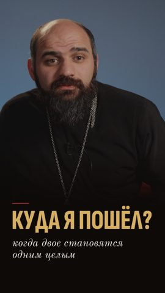
Супружество - глубоко мистический союз: «будут двое в плоть едину». Пётр Мамонов рассказывал, как смотрел в окно на уходящую жену и думал: куда это я пошёл? Господь и мне дал к этому прикоснуться: поздно вечером мы несли уснувших в машине сыновей к подъезду, жена шла впереди с младшим, я смотрел на неё и понимал, что это я иду. Между супругами нулевая степень родства, это ближе, чем родители и дети. И тогда вопрос: как мы относимся к самому дорогому человеку после Бога? Раздражаемся, срываемся? Это показывает, кто мы есть. Любить нужно учиться. На мужа или жену срываетесь чаще, чем на чужих людей? С этим откровением надо что-то делать. #православие #супружество #брак #семья #любовь
Как ты относишься к самому дорогому человеку #shorts
Супружество - глубоко мистический союз: «будут двое в плоть едину». Пётр Мамонов рассказывал, как смотрел в окно на уходящую жену и думал: куда это я пошёл? Господь и мне дал к этому прикоснуться: поздно вечером мы несли уснувших в машине сыновей к подъезду, жена шла впереди с младшим, я смотрел на неё и понимал, что это я иду. Между супругами нулевая степень родства, это ближе, чем родители и дети. И тогда вопрос: как мы относимся к самому дорогому человеку после Бога? Раздражаемся, срываемся? Это показывает, кто мы есть. Любить нужно учиться. На мужа или жену срываетесь чаще, чем на чужих людей? С этим откровением надо что-то делать. #православие #супружество #брак #семья #любовь
православие, супружество, брак, семья, любовь, отец Михаил, священник
Как ты относишься к самому дорогому человеку
Супружество - глубоко мистический союз: «будут двое в плоть едину». Пётр Мамонов рассказывал, как смотрел в окно на уходящую жену и думал: куда это я пошёл? Господь и мне дал к этому прикоснуться: поздно вечером мы несли уснувших в машине сыновей к подъезду, жена шла впереди с младшим, я смотрел на неё и понимал, что это я иду. Между супругами нулевая степень родства, это ближе, чем родители и дети. И тогда вопрос: как мы относимся к самому дорогому человеку после Бога? Раздражаемся, срываемся? Это показывает, кто мы есть. Любить нужно учиться. На мужа или жену срываетесь чаще, чем на чужих людей? С этим откровением надо что-то делать. #православие #супружество #брак #семья #любовь
Супружество - глубоко мистический союз: «будут двое в плоть едину». Пётр Мамонов рассказывал, как смотрел в окно на уходящую жену и думал: куда это я пошёл? Господь и мне дал к этому прикоснуться: поздно вечером мы несли уснувших в машине сыновей к подъезду, жена шла впереди с младшим, я смотрел на неё и понимал, что это я иду. Между супругами нулевая степень родства, это ближе, чем родители и дети. И тогда вопрос: как мы относимся к самому дорогому человеку после Бога? Раздражаемся, срываемся? Это показывает, кто мы есть. Любить нужно учиться. На мужа или жену срываетесь чаще, чем на чужих людей? С этим откровением надо что-то делать. #православие #супружество #брак

Каждый день можно быть героем или подлецом Ещё до семинарии я поехал на Соловки и стоял в очереди на исповедь с надменной мыслью: я столько книжек прочитал, ну что ты мне скажешь? Монах выслушал молча и только в самом конце сказал: «Михаил, вы знаете, каждый день можно быть героем или подлецом». Сказал мало, а у меня это до сих пор сидит. Каждый знает, где он может быть подлецом, а где героем - для жены, для детей, для своей страны. Не один раз геройски умереть, а быть порядочным человеком каждый день - вот что самое тяжёлое. Знаете, как поступить по совести, а сил хватает не каждый день? #православие #мужчина #воспитаниемальчиков #Соловки #исповедь
Каждый день можно быть героем или подлецом #shorts
Ещё до семинарии я поехал на Соловки и стоял в очереди на исповедь с надменной мыслью: я столько книжек прочитал, ну что ты мне скажешь? Монах выслушал молча и только в самом конце сказал: «Михаил, вы знаете, каждый день можно быть героем или подлецом». Сказал мало, а у меня это до сих пор сидит. Каждый знает, где он может быть подлецом, а где героем - для жены, для детей, для своей страны. Не один раз геройски умереть, а быть порядочным человеком каждый день - вот что самое тяжёлое. Знаете, как поступить по совести, а сил хватает не каждый день? #православие #мужчина #воспитаниемальчиков #Соловки #исповедь
православие, мужчина, воспитание мальчиков, Соловки, исповедь, отец Михаил, священник
Каждый день можно быть героем или подлецом
Ещё до семинарии я поехал на Соловки и стоял в очереди на исповедь с надменной мыслью: я столько книжек прочитал, ну что ты мне скажешь? Монах выслушал молча и только в самом конце сказал: «Михаил, вы знаете, каждый день можно быть героем или подлецом». Сказал мало, а у меня это до сих пор сидит. Каждый знает, где он может быть подлецом, а где героем - для жены, для детей, для своей страны. Не один раз геройски умереть, а быть порядочным человеком каждый день - вот что самое тяжёлое. Знаете, как поступить по совести, а сил хватает не каждый день? #православие #мужчина #воспитаниемальчиков #Соловки #исповедь
Каждый день можно быть героем или подлецом Ещё до семинарии я поехал на Соловки и стоял в очереди на исповедь с надменной мыслью: я столько книжек прочитал, ну что ты мне скажешь? Монах выслушал молча и только в самом конце сказал: «Михаил, вы знаете, каждый день можно быть героем или подлецом». Сказал мало, а у меня это до сих пор сидит. Каждый знает, где он может быть подлецом, а где героем - для жены, для детей, для своей страны. Не один раз геройски умереть, а быть порядочным человеком каждый день - вот что самое тяжёлое. Знаете, как поступить по совести, а сил хватает не каждый день? #православие #мужчина #воспитаниемальчиков
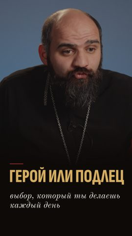
Мужчина закаляется только в преодолении
Надо ли быть мужиком, чтобы быть мужчиной? Мужчина закаляется только в преодолении, а мальчика мы помещаем в сладкую среду, где всё за него сделали и всё доступно. Девочек при этом воспитываем построже, будто воинов, а мальчиков жалеем. У меня с воспитанием тоже было непросто, и я добирал - от тренера, от старших братьев, от улицы, от армии. А на Соловках монах сказал мне на исповеди: «Михаил, каждый день можно быть героем или подлецом». Сыну всё достаётся без усилий, и тревожно, вырастет ли из него мужчина? #православие #мужчина #воспитаниемальчиков #Соловки #исповедь
Надо ли быть мужиком, чтобы быть мужчиной? Брат, вот такой момент, что мужчина, он прям закаляется только в преодолении. Преодолении, в постоянном преодолении. А мы помещаем мальчика в такую сладкую среду, где нет никакого преодоления. Всё за него сделали, всё доступно. Доступно то, что не должно быть ему доступно. Всё ему дали. Какое преодоление-то? И причём почему-то такая тенденция, что к девочке мы построже. Девочку так воспитываем, как будто воина хотим из неё воспитать. А с мальчиком женское воспитание, потому что женщины жалеют мальчиков своих, а девочек не жалеют. У меня тоже очень непросто всё с воспитанием было. И я всё равно добирал, где-то добирал. От тренера добирал, от старших братьев добирал, от улицы добирал. От армии добирал и так далее. Может, как-то Господь управит. Я как-то поехал на Соловки ещё до своего поступления в семинарию. И стою я, значит, в монастыре на исповедь в очередь. Сейчас подойду к монаху на исповедь и про себя думаю: ну вот что ты мне сейчас скажешь? Такая надменная позиция, я весь такой начитанный, столько книжек прочитал, так много знаю. Ну что ты мне сейчас скажешь? Я иду на исповедь, проговариваю исповедь. Монах мне ничего не говорит, священномонашествующий. И в самом конце говорит: «Михаил, вы знаете, каждый день можно быть героем или подлецом». Вот так он мало мне сказал, а у меня до сих пор это сидит, понимаешь? Вот каждый день можно быть героем или подлецом. Брат, и ты знаешь, где ты можешь быть подлецом, а где можешь быть героем. Будь героем для своей жены, для себя, для своей страны, для своих детей. Борись со своей ленью и так далее. Будь героем каждый день. Вот это ведь самое тяжёлое, быть героем каждый день. Не один раз пойти геройски умереть, а быть героем каждый день. Быть порядочным человеком каждого дня.
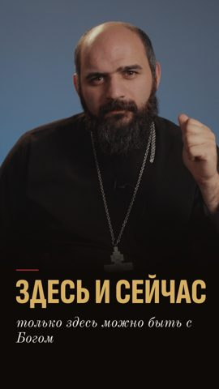
С Богом можно быть только здесь и сейчас
Блаженный Августин замечает: будущего ещё нет, прошлого уже нет, есть только точка настоящего - и она соприкасается с вечностью. Только в ней мы и можем быть с Богом, а не в мнимом будущем и не в воспоминаниях. Христос говорит: «Будьте как дети» - и этому тоже можно учиться у детей, ведь ребёнок всецело здесь и сейчас. Святитель Игнатий Брянчанинов называет внимание душой молитвы, а внимание и есть общение с Богом в настоящем. Встаёте на молитву, а мысли то во вчерашнем, то в завтрашнем? #православие #молитва #время #вера #святыеотцы
Отче, что про время хотели бы поделиться с людьми? Ты знаешь, вот о времени есть очень интересная мысль у Блаженного Августина. Будущее, его еще нету. Прошлое, его уже нету. Есть только вот эта вот точка, точка настоящего, которая постоянно перетекает из будущего в прошлое. Как течет время неуловимо. И вот только вот в этой точке, точка настоящего, которой ты реально можешь быть. И интересно, что вот эта точка настоящего, она соприкасается с вечностью. И в этой точке настоящего ты только и можешь быть с Богом. Общаться с Богом ты можешь только вот в этой точке, в точке настоящего. Ты не можешь общаться с Богом в каком-то своем мнимом будущем. Ты не можешь общаться с Богом в своем каком-то прошлом, во вспоминаниях своего прошлого. С Богом ты можешь быть только здесь и сейчас, вот в этой точке. Вот удивительно, у Христа есть такие слова, Он говорит, будьте как дети. На самом деле, вот в этом плане тоже мы можем научиться у детей. Вот ребенок, он прям, вот он всецело здесь и сейчас. Ты ему там скажешь что-нибудь, пойдем завтра к твоему другу. Он говорит, а давай сейчас, а давай завтра там сделаем что-то. А давай сейчас, потому что он всецело здесь и сейчас. Да, он же не живет, ребенок в каком-то будущем или в прошлом. Ребенок вот всецело здесь. И ты тоже вот должен как-то научиться быть здесь. И вот здесь ты только и можешь быть с Богом. Вот в святоотеческом наследии очень много внимания уделяют вниманию в молитве. Да, святитель Игнатий Брянчанинов называет внимание такой душой молитвы. Ведь на самом деле вот внимание в молитве это и есть, когда твое общение вот в этой точке, в точке настоящего. Будем учиться быть здесь и сейчас.
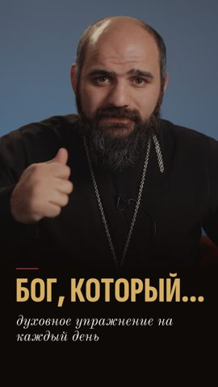
Духовное упражнение - Бог, Который Недавно я предложил это упражнение прихожанам. Сделайте в сердце рамочку и начните: Бог, Который... так возлюбил мир, что отдал Сына Своего Единородного; родился от Девы; до тридцати лет жил в послушании, и руки Его были в мозолях; пошёл на крестные страдания ради меня грешного. На одном этом можно пробыть весь день - рождаются благодарение, смирение, любовь, и они воспитывают сердце. А когда спросят, во что вы верите, будет что ответить. Молитва не идёт, и знакомые слова Евангелия проходят мимо сердца? Начните с двух слов: «Бог, Который». Подпишитесь. #православие #молитва #Евангелие #духовнаяжизнь #вера
Духовное упражнение - Бог, Который #shorts
Недавно я предложил это упражнение прихожанам. Сделайте в сердце рамочку и начните: Бог, Который... так возлюбил мир, что отдал Сына Своего Единородного; родился от Девы; до тридцати лет жил в послушании, и руки Его были в мозолях; пошёл на крестные страдания ради меня грешного. На одном этом можно пробыть весь день - рождаются благодарение, смирение, любовь, и они воспитывают сердце. А когда спросят, во что вы верите, будет что ответить. Молитва не идёт, и знакомые слова Евангелия проходят мимо сердца? Начните с двух слов: «Бог, Который». Подпишитесь. #православие #молитва #Евангелие #духовнаяжизнь #вера
православие, молитва, Евангелие, духовная жизнь, вера, отец Михаил, священник
Духовное упражнение - Бог, Который
Недавно я предложил это упражнение прихожанам. Сделайте в сердце рамочку и начните: Бог, Который... так возлюбил мир, что отдал Сына Своего Единородного; родился от Девы; до тридцати лет жил в послушании, и руки Его были в мозолях; пошёл на крестные страдания ради меня грешного. На одном этом можно пробыть весь день - рождаются благодарение, смирение, любовь, и они воспитывают сердце. А когда спросят, во что вы верите, будет что ответить. Молитва не идёт, и знакомые слова Евангелия проходят мимо сердца? Начните с двух слов: «Бог, Который». Подпишитесь. #православие #молитва #Евангелие #духовнаяжизнь #вера
Духовное упражнение - Бог, Который Недавно я предложил это упражнение прихожанам. Сделайте в сердце рамочку и начните: Бог, Который... так возлюбил мир, что отдал Сына Своего Единородного; родился от Девы; до тридцати лет жил в послушании, и руки Его были в мозолях; пошёл на крестные страдания ради меня грешного. На одном этом можно пробыть весь день - рождаются благодарение, смирение, любовь, и они воспитывают сердце. А когда спросят, во что вы верите, будет что ответить. Молитва не идёт, и знакомые слова Евангелия проходят мимо сердца? Начните с двух слов: «Бог, Который». Подпишитесь. #православие #молитва #Евангелие
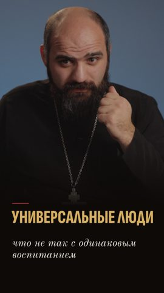
Мальчик и девочка за одной партой - в чём беда Детский сад, школа, институт - мальчика и девочку всё время воспитывают вместе, и на выходе получаются универсальные люди: не мужчина со своими мужскими качествами и не женщина со своими женскими. А семью могут создать только мужчина и женщина. Муж в ней глава, но не деспот: он любит жену, как Христос возлюбил Церковь, до готовности отдать за неё жизнь. Паисий Святогорец говорил: если ты не умеешь любить, тебе даже кошка не будет послушна. Растите сына и дочь, а школа воспитывает их одинаково? #православие #воспитание #семья #мужчинаиженщина #ПаисийСвятогорец
Мальчик и девочка за одной партой - в чём беда #shorts
Детский сад, школа, институт - мальчика и девочку всё время воспитывают вместе, и на выходе получаются универсальные люди: не мужчина со своими мужскими качествами и не женщина со своими женскими. А семью могут создать только мужчина и женщина. Муж в ней глава, но не деспот: он любит жену, как Христос возлюбил Церковь, до готовности отдать за неё жизнь. Паисий Святогорец говорил: если ты не умеешь любить, тебе даже кошка не будет послушна. Растите сына и дочь, а школа воспитывает их одинаково? #православие #воспитание #семья #мужчинаиженщина #ПаисийСвятогорец
православие, воспитание, семья, мужчина и женщина, Паисий Святогорец, отец Михаил, священник
Мальчик и девочка за одной партой - в чём беда
Детский сад, школа, институт - мальчика и девочку всё время воспитывают вместе, и на выходе получаются универсальные люди: не мужчина со своими мужскими качествами и не женщина со своими женскими. А семью могут создать только мужчина и женщина. Муж в ней глава, но не деспот: он любит жену, как Христос возлюбил Церковь, до готовности отдать за неё жизнь. Паисий Святогорец говорил: если ты не умеешь любить, тебе даже кошка не будет послушна. Растите сына и дочь, а школа воспитывает их одинаково? #православие #воспитание #семья #мужчинаиженщина #ПаисийСвятогорец
Мальчик и девочка за одной партой - в чём беда Детский сад, школа, институт - мальчика и девочку всё время воспитывают вместе, и на выходе получаются универсальные люди: не мужчина со своими мужскими качествами и не женщина со своими женскими. А семью могут создать только мужчина и женщина. Муж в ней глава, но не деспот: он любит жену, как Христос возлюбил Церковь, до готовности отдать за неё жизнь. Паисий Святогорец говорил: если ты не умеешь любить, тебе даже кошка не будет послушна. Растите сына и дочь, а школа воспитывает их одинаково? #православие #воспитание #семья
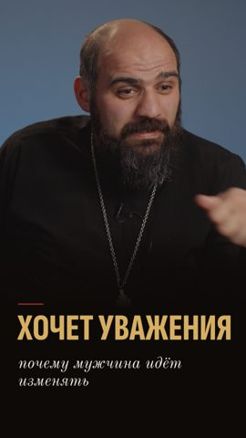
Почему мужчина идёт изменять Женщине важно понимать, что её любят, мужчине - видеть уважение. Когда мужа унижают, подтрунивают над ним, держат под каблуком, это его убивает, даже если он сам не может объяснить, почему ему так плохо. В святоотеческом наследии страсти связаны друг с другом, как маленькие камни, прижатые к большому: задетое тщеславие бьёт по блудной страсти. И мужчина идёт изменять не потому, что хочет блудить, а потому, что хочет уважения. Муж отдаляется, а почему - непонятно? #православие #брак #измена #уважение #семья
Почему мужчина идёт изменять #shorts
Женщине важно понимать, что её любят, мужчине - видеть уважение. Когда мужа унижают, подтрунивают над ним, держат под каблуком, это его убивает, даже если он сам не может объяснить, почему ему так плохо. В святоотеческом наследии страсти связаны друг с другом, как маленькие камни, прижатые к большому: задетое тщеславие бьёт по блудной страсти. И мужчина идёт изменять не потому, что хочет блудить, а потому, что хочет уважения. Муж отдаляется, а почему - непонятно? #православие #брак #измена #уважение #семья
православие, брак, измена, уважение, семья, отец Михаил, священник
Почему мужчина идёт изменять
Женщине важно понимать, что её любят, мужчине - видеть уважение. Когда мужа унижают, подтрунивают над ним, держат под каблуком, это его убивает, даже если он сам не может объяснить, почему ему так плохо. В святоотеческом наследии страсти связаны друг с другом, как маленькие камни, прижатые к большому: задетое тщеславие бьёт по блудной страсти. И мужчина идёт изменять не потому, что хочет блудить, а потому, что хочет уважения. Муж отдаляется, а почему - непонятно? #православие #брак #измена #уважение #семья
Почему мужчина идёт изменять Женщине важно понимать, что её любят, мужчине - видеть уважение. Когда мужа унижают, подтрунивают над ним, держат под каблуком, это его убивает, даже если он сам не может объяснить, почему ему так плохо. В святоотеческом наследии страсти связаны друг с другом, как маленькие камни, прижатые к большому: задетое тщеславие бьёт по блудной страсти. И мужчина идёт изменять не потому, что хочет блудить, а потому, что хочет уважения. Муж отдаляется, а почему - непонятно? #православие #брак #измена
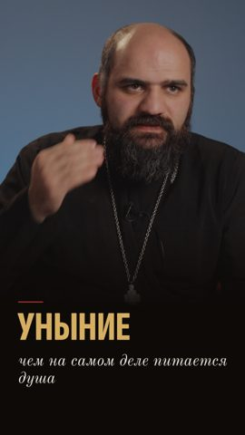
Что такое уныние и как от него оторваться Изначально душа человека питается Богом. После грехопадения, оторванная от Бога, она питается суррогатом - страстями, и уныние одна из них, как чревоугодие, гордость, тщеславие. Механизм со всеми один: оторвать душу от страсти и привязать к Богу. Другого пути нет - только церковные Таинства и живое богообщение. Накрыло уныние, и ничего не радует? Душа ищет пищу, а находит суррогат. #православие #уныние #страсти #Таинства #духовнаяжизнь
Что такое уныние и как от него оторваться #shorts
Изначально душа человека питается Богом. После грехопадения, оторванная от Бога, она питается суррогатом - страстями, и уныние одна из них, как чревоугодие, гордость, тщеславие. Механизм со всеми один: оторвать душу от страсти и привязать к Богу. Другого пути нет - только церковные Таинства и живое богообщение. Накрыло уныние, и ничего не радует? Душа ищет пищу, а находит суррогат. #православие #уныние #страсти #Таинства #духовнаяжизнь
православие, уныние, страсти, Таинства, духовная жизнь, отец Михаил, священник
Что такое уныние и как от него оторваться
Изначально душа человека питается Богом. После грехопадения, оторванная от Бога, она питается суррогатом - страстями, и уныние одна из них, как чревоугодие, гордость, тщеславие. Механизм со всеми один: оторвать душу от страсти и привязать к Богу. Другого пути нет - только церковные Таинства и живое богообщение. Накрыло уныние, и ничего не радует? Душа ищет пищу, а находит суррогат. #православие #уныние #страсти #Таинства #духовнаяжизнь
Что такое уныние и как от него оторваться Изначально душа человека питается Богом. После грехопадения, оторванная от Бога, она питается суррогатом - страстями, и уныние одна из них, как чревоугодие, гордость, тщеславие. Механизм со всеми один: оторвать душу от страсти и привязать к Богу. Другого пути нет - только церковные Таинства и живое богообщение. Накрыло уныние, и ничего не радует? Душа ищет пищу, а находит суррогат. #православие #уныние #страсти
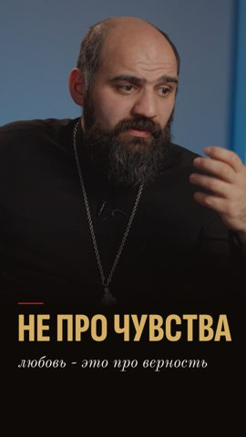
Настоящее супружество не уступает монашеству
Подвижник XX века Софроний Сахаров к концу жизни пришёл к откровению: настоящее супружество ничем не уступает настоящему монашеству. Но настоящее - большая редкость, потому что любить нужно учиться, мы не рождаемся с этим. Чувство сегодня есть, завтра нет, на нём брак не построишь. Любовь - про верность: сжал зубы и иду, всё равно люблю. А без Бога не научишься: «Господи, научи меня любить мою жену». Чувства прошли, и кажется, что брак держится ни на чём? #православие #брак #супружество #любовь #верность
Знаешь, вот тоже интересно по поводу супружества, вот такой подвижник XX века, Софроний Сахаров. И вот почти к концу своей жизни для него стало таким откровением, такое откровение всей его жизни, что настоящее супружество, оно вот наравне с настоящим монашеством. Да, если у нас вот в православии, в православной традиции такая вот завышенная планка к монашеству, для нас монашество это вот какой-то ангельский чин, почтенный старец, очень уважаемый старец, я бы даже сказал святой, к концу жизни приходит вот к такому, что настоящее супружество, оно вот ничем не уступает монашеству. Но где это настоящее? Это такая большая редкость, когда действительно вот люди живут в какой-то удивительной гармонии, в каком-то единстве, когда люди действительно знают, что такое любовь и любят друг друга. Вот мы говорим, вот у нас такая беда, трубим сейчас об этой статистике, 80 % разводов. Значит что, у нас остаются 20, а давайте в эти 20 еще заглянем, какой там процент будет как бы такого гармоничного супружества. Ты же вообще единица. Люди не умеют любить, люди не знают, что нужно учиться любить, что это не твоя базовая комплектация, ты не родился с этим, ты не будешь как бы такой вошел в семью и розочки, цветочки. У нас такая романтизированная в этом плане история. Мы вообще не понимаем, что это. Мы не понимаем, что такое брак, что такое супружество, как любить жену и мужа. Мы вышли вот из этой эпохи романтизма, думаем, что все как бы на чувствах, а чувство вообще далеко не главное. Чувство это такая история, сегодня есть, завтра нету, а послезавтра снова есть. Ты не можешь свой брак основывать на чувствах. Это очень зыбкий фундамент. Любовь это не про чувства. Любовь это про верность, про сжал зубы и иду, все равно люблю. Любовь это всегда про Бога. Если Бога нету, то и любви нету, потому что Бог есть любовь. И ты не научишься любить без Бога. Не получается что-то, Господи, вот прям вот прошу тебя, научи меня любить мою жену. Научи меня любить мою жену. И он научит, он научит твое сердце. Люби.
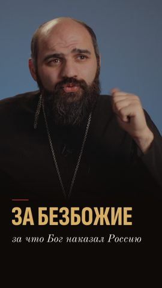
За что Бог наказал Россию
Если одним словом - за безбожие. XIX век был безбожным везде: и среди дворян, и среди крестьян, и в духовенстве. Время без гонений для верующих оказывается временем обмирщения, когда христианство просто размывается. А святитель Феофан Затворник заметил нашу постоянную беду: мы смотрим в рот Европе в ущерб своей вере - и Господь наказывает нас теми народами, которыми мы чрезмерно увлеклись. Болит сердце за Россию, и непонятно, за что ей столько бед? #православие #Россия #история #вера #ФеофанЗатворник
Отче, вот страна, Россиюшка, вымирает, и все началось в 1917 году. За что Бог так наказал вообще русских? Брат, ты знаешь, вот если сказать одним словом, то за безбожие. Потому что 19 век, он такой безбожный. И это безбожие, оно было везде, да. И в дворянской среде, и в крестьянской среде, и в духовенстве. Да, казалось бы, духовенство, но и там было какие-то ужасные истории. Все это, конечно, накопилось. Почему это стало возможным? Только потому, что отошли от Бога. Отче, а как это было возможно, если строились храмы? Если богатые купцы и старообрядцы делали столько социальных объектов для общества? Ты знаешь, именно, как ни странно, но именно вот такое время, время, когда нету гонений на церковь, для верующих оказывается таким вот временем обмирщения. Обмирщение, когда твое христианство, оно просто размывается, и непонятно вообще, в чем оно проявляется. Ты так сродняешься с этим миром, становишься чадом этого мира. А ты должен быть чадом Божиим и жить по-другому. Ведь еще какая-то такая проблема, наш святой такой, святитель Феофан Затворник, он заметил такую тенденцию, что у нас есть постоянно такая беда, что мы смотрим в рот в Европе, начинаем копировать эту Европу, начинаем культуру копировать, начинаем язык перенимать. Помните? И чем это нам оборачивает? Господь нас потом наказывает этими народами, которыми мы увлеклись, чрезмерно увлеклись, в ущерб своей, в ущерб своей традиции, в ущерб своей вере. Смотрели в рот французам, Господь нас наказал французами. Смотрели в рот немцами, немцам увлекались философией немецкой, немецкой техникой, немецким языком. Господь нас наказал немцам. Смотрели в рот американцам. Сейчас Господь нас наказывает. Потому что чьи ракеты в нас летят? Американцы.
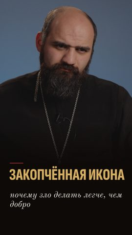
Почему делать зло легче, чем добро
Человеческая природа удобопреклонна ко греху: нам легче сорваться, чем сдержаться, гневаться, чем быть кроткими, ненавидеть, чем любить. Чтобы бороться с этим, сначала надо это понять, а силы можно найти только в Боге. Образ Божий в человеке неуничтожим - он как закопчённая икона, которую можно очистить. Задача непростая и без Бога невыполнимая. Обещали себе не срываться и снова сорвались? #православие #грех #образБожий #покаяние #вера
Есть люди, которые выбирают зло настолько последовательно, что они прямиком хотят в ад. Брат, всякий человек рождается в греховной природе. Есть такое понятие удобопреклонность ко греху. Человеческая природа, она удобопреклонна ко греху. Нам удобнее делать зло, чем добро. Это очень легко увидеть в своей жизни. Тебе легче срываться, чем не срываться. Гневаться, нежели быть кротким, ненавидеть, нежели любить. И покрывать любовью какие-то проступки. И чтобы, конечно, бороться с этой природой, во-первых, ее надо понять. Во-первых, должна появиться какая-то осознанность, все-таки противиться ей. Еще где-то надо силы найти, силы только в Боге может. Он тебе даст силы этим бороться и менять это. Все-таки человек, образ Божий, и причем такой неуничтожимый образ Божий. Нельзя этот образ Божий уничтожить в человеке. Он всегда остается. Но, как, знаешь, такая затуманенная икона. Вот икону можно как бы так закоптить, а можно ее очистить. Наша задача как бы ее очищать. Но задача очень непростая. И без Бога невыполнима.
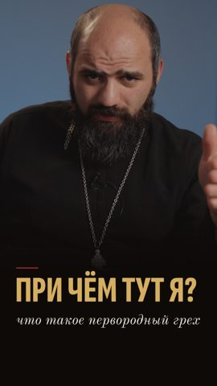
Первородный грех - при чём тут я
Главный вопрос, который задают воцерковляющиеся семьи: я рождён от матери, я ничего не сделал - при чём тут я? Адам и Ева нарушили одну-единственную заповедь, и смерть и грех вошли в природу человека, а падшую природу наследуем мы все. Здесь важно отделить вину: вины за это на нас нет, но последствия мы наследуем. Тоже спрашивали: «Я ничего не сделал - почему я должен за это отвечать?» #православие #первородныйгрех #АдамиЕва #вера #богословие
Что такое первородный грех? И самый главный вопрос, который задают воцерковляющие семьи, причем тут я, как человек, который рожден от матери, я же ничего не сделал. Все всегда упирается в начало истории человечества. Адам и Ева. Господь создает Адама и Еву, создает рай для них, ставит их во главу этого рая, дает им заповедь, дает одну единственную запретительную заповедь не вкушать от древа познания добра и зла. И это был гарант человеческой верности, что он верен Богу. Господь запретил, я этого не делаю, потому что я люблю его. Человек ослушивает, соблазняется, идет на это, согрешает, не может покаяться, доходит до такого состояния, когда не может покаяться. Господь ему говорил, в тот день, который вкусишь от древа познания добра и зла, в тот день смертию умрешь. И смерть входит в природу бытия, в природу человека. Грех входит в природу человека. И он попадает под власть дьявола. И искажается его природа. Искажается вся земля из-за человека. И человеческая природа становится греховной. И она передается. Мы все наследуем эту падшую природу. Вот в этом перевороте. Ну а причем тут мы-то? Мы вот последние в цепочке. Почему мы должны за все отвечать? Брат, вот тут надо отделить вину. На нас не лежит вина за это. Но мы наследуем последствия за это.
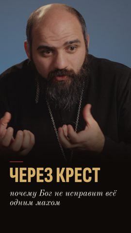
Почему Бог не исцеляет всех в одно мгновение Есть принцип божественной справедливости: Господь Сам установил законы, физические и духовные, и, нарушив их, стал бы их главным нарушителем. Поэтому Он поступает иначе: вочеловечивается, идёт на крестные страдания, умирает, разрушает ад и выводит оттуда праведников. И оставляет нам этот путь - через крест к воскресению. Просите Бога о помощи и не понимаете, почему Он не исправит всё сразу? #православие #Христос #воскресение #вера #богословие
Почему Бог не исцеляет всех в одно мгновение #shorts
Есть принцип божественной справедливости: Господь Сам установил законы, физические и духовные, и, нарушив их, стал бы их главным нарушителем. Поэтому Он поступает иначе: вочеловечивается, идёт на крестные страдания, умирает, разрушает ад и выводит оттуда праведников. И оставляет нам этот путь - через крест к воскресению. Просите Бога о помощи и не понимаете, почему Он не исправит всё сразу? #православие #Христос #воскресение #вера #богословие
православие, Христос, воскресение, вера, богословие, отец Михаил, священник
Почему Бог не исцеляет всех в одно мгновение
Есть принцип божественной справедливости: Господь Сам установил законы, физические и духовные, и, нарушив их, стал бы их главным нарушителем. Поэтому Он поступает иначе: вочеловечивается, идёт на крестные страдания, умирает, разрушает ад и выводит оттуда праведников. И оставляет нам этот путь - через крест к воскресению. Просите Бога о помощи и не понимаете, почему Он не исправит всё сразу? #православие #Христос #воскресение #вера #богословие
Почему Бог не исцеляет всех в одно мгновение Есть принцип божественной справедливости: Господь Сам установил законы, физические и духовные, и, нарушив их, стал бы их главным нарушителем. Поэтому Он поступает иначе: вочеловечивается, идёт на крестные страдания, умирает, разрушает ад и выводит оттуда праведников. И оставляет нам этот путь - через крест к воскресению. Просите Бога о помощи и не понимаете, почему Он не исправит всё сразу? #православие #Христос #воскресение
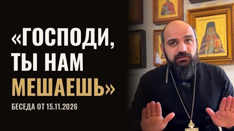
«Господи, Ты нам мешаешь»: обиды, бесы и сердце - беседа с прихожанами целиком Живой разговор с прихожанами о вере. Почему Бог выбрал именно Деву Марию. Почему спрашивать нужно не «за что мне это?», а «для чего, Господи?». Как не ответить обидой, если обидели взрослые дети. Почему бесы просятся в свиней, а не в ад. И почему люди, увидев чудо, говорят Христу: «Уйди от пределов наших» - Ты нам мешаешь бизнес вести. А мы и сегодня держим Бога как обслуживающий персонал: «тут сделай, тут подотри», а Он хочет сердце. Верите, а в жизни Евангелие пока не получается? Христианство - это практика. Подпишитесь. #православие #вера #беседа #Евангелие #христианство
«Господи, Ты нам мешаешь»: обиды, бесы и сердце - беседа с прихожанами целиком
Живой разговор с прихожанами о вере. Почему Бог выбрал именно Деву Марию. Почему спрашивать нужно не «за что мне это?», а «для чего, Господи?». Как не ответить обидой, если обидели взрослые дети. Почему бесы просятся в свиней, а не в ад. И почему люди, увидев чудо, говорят Христу: «Уйди от пределов наших» - Ты нам мешаешь бизнес вести. А мы и сегодня держим Бога как обслуживающий персонал: «тут сделай, тут подотри», а Он хочет сердце.
00:00 Заучиваем пророка Исаию 05:23 Почему Бог выбрал Деву Марию 08:06 Симеон Богоприимец 11:43 Миссия - дело каждого 15:06 Авраам: зачем Богу повод 19:21 Христианство - это практика 21:32 Не «за что», а «для чего» 23:29 Кесарю кесарево: безвыходных ситуаций нет 25:31 «Господи, научи меня любить» 29:22 Если обижают взрослые дети 33:03 Евангелие о бесноватых гадаринских 35:51 «Легион»: почему бесы не хотят в ад 40:51 «Господи, Ты нам мешаешь бизнес вести» 47:16 Если бы Христос пришёл сегодня 49:54 Бесы - это не сказки 51:24 Искушение реально: исповедь и причастие Верите, а в жизни Евангелие пока не получается? Христианство - это практика. Подпишитесь. #православие #вера #беседа #Евангелие #христианство
православие, вера, беседа, Евангелие, христианство, отец Михаил, священник
«Господи, Ты нам мешаешь»: обиды, бесы и сердце - беседа с прихожанами целиком
Живой разговор с прихожанами о вере. Почему Бог выбрал именно Деву Марию. Почему спрашивать нужно не «за что мне это?», а «для чего, Господи?». Как не ответить обидой, если обидели взрослые дети. Почему бесы просятся в свиней, а не в ад. И почему люди, увидев чудо, говорят Христу: «Уйди от пределов наших» - Ты нам мешаешь бизнес вести. А мы и сегодня держим Бога как обслуживающий персонал: «тут сделай, тут подотри», а Он хочет сердце. Верите, а в жизни Евангелие пока не получается? Христианство - это практика. Подпишитесь. #православие #вера #беседа #Евангелие #христианство
«Господи, Ты нам мешаешь»: обиды, бесы и сердце - беседа с прихожанами целиком Живой разговор с прихожанами о вере. Почему Бог выбрал именно Деву Марию. Почему спрашивать нужно не «за что мне это?», а «для чего, Господи?». Как не ответить обидой, если обидели взрослые дети. Почему бесы просятся в свиней, а не в ад. И почему люди, увидев чудо, говорят Христу: «Уйди от пределов наших» - Ты нам мешаешь бизнес вести. А мы и сегодня держим Бога как обслуживающий персонал: «тут сделай, тут подотри», а Он хочет сердце. Верите, а в жизни Евангелие пока не получается? Христианство - это практика. Подпишитесь. #православие #вера #беседа
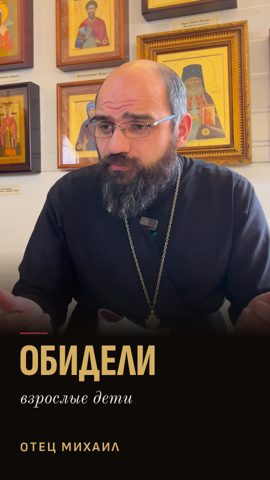
Со взрослыми детьми уже совсем другие отношения. Если они ранят, стоит спросить не «почему они так», а «почему моё сердце так реагирует, где моя кротость, которая держит меня в ровности?». И поблагодарить: «Господи милостивый, спасибо Тебе, что Ты мне это показал. Научи меня смирению, научи меня кротости». А с маленькими детьми мера другая: власть дана Богом, и вожжи отпускать не надо. Обидели свои же взрослые дети, и хочется ответить тем же? #православие #вера #дети #смирение #семья
Обидели взрослые дети: как не ответить обидой? #shorts
Со взрослыми детьми уже совсем другие отношения. Если они ранят, стоит спросить не «почему они так», а «почему моё сердце так реагирует, где моя кротость, которая держит меня в ровности?». И поблагодарить: «Господи милостивый, спасибо Тебе, что Ты мне это показал. Научи меня смирению, научи меня кротости». А с маленькими детьми мера другая: власть дана Богом, и вожжи отпускать не надо. Обидели свои же взрослые дети, и хочется ответить тем же? #православие #вера #дети #смирение #семья
православие, вера, дети, смирение, семья, отец Михаил, священник
Обидели взрослые дети: как не ответить обидой?
Со взрослыми детьми уже совсем другие отношения. Если они ранят, стоит спросить не «почему они так», а «почему моё сердце так реагирует, где моя кротость, которая держит меня в ровности?». И поблагодарить: «Господи милостивый, спасибо Тебе, что Ты мне это показал. Научи меня смирению, научи меня кротости». А с маленькими детьми мера другая: власть дана Богом, и вожжи отпускать не надо. Обидели свои же взрослые дети, и хочется ответить тем же? #православие #вера #дети #смирение #семья
Со взрослыми детьми уже совсем другие отношения. Если они ранят, стоит спросить не «почему они так», а «почему моё сердце так реагирует, где моя кротость, которая держит меня в ровности?». И поблагодарить: «Господи милостивый, спасибо Тебе, что Ты мне это показал. Научи меня смирению, научи меня кротости». А с маленькими детьми мера другая: власть дана Богом, и вожжи отпускать не надо. Обидели свои же взрослые дети, и хочется ответить тем же? #православие #вера #дети
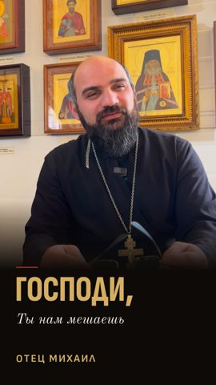
Христос исцелил бесноватого, которого все боялись и которому никто не мог помочь. А жители говорят Ему: «Уйди от пределов наших». Свиней они не ели, а продавали, у них был бизнес - и всё погибло. Выходит, их беснование опаснее. И сегодня человек может видеть в своей жизни откровенные чудеса и говорить Богу: «Ты мне мешаешь, вот Твоё место». Мы держим Его как обслуживающий персонал - тут сделай, тут подотри. А Он хочет сердце: «Дай Мне, сыне, сердце». Бывает, что вера вдруг начинает мешать вашим делам? #православие #вера #Евангелие #сердце #христианство
«Господи, Ты нам мешаешь бизнес вести» #shorts
Христос исцелил бесноватого, которого все боялись и которому никто не мог помочь. А жители говорят Ему: «Уйди от пределов наших». Свиней они не ели, а продавали, у них был бизнес - и всё погибло. Выходит, их беснование опаснее. И сегодня человек может видеть в своей жизни откровенные чудеса и говорить Богу: «Ты мне мешаешь, вот Твоё место». Мы держим Его как обслуживающий персонал - тут сделай, тут подотри. А Он хочет сердце: «Дай Мне, сыне, сердце». Бывает, что вера вдруг начинает мешать вашим делам? #православие #вера #Евангелие #сердце #христианство
православие, вера, Евангелие, сердце, христианство, отец Михаил, священник
«Господи, Ты нам мешаешь бизнес вести»
Христос исцелил бесноватого, которого все боялись и которому никто не мог помочь. А жители говорят Ему: «Уйди от пределов наших». Свиней они не ели, а продавали, у них был бизнес - и всё погибло. Выходит, их беснование опаснее. И сегодня человек может видеть в своей жизни откровенные чудеса и говорить Богу: «Ты мне мешаешь, вот Твоё место». Мы держим Его как обслуживающий персонал - тут сделай, тут подотри. А Он хочет сердце: «Дай Мне, сыне, сердце». Бывает, что вера вдруг начинает мешать вашим делам? #православие #вера #Евангелие #сердце #христианство
Христос исцелил бесноватого, которого все боялись и которому никто не мог помочь. А жители говорят Ему: «Уйди от пределов наших». Свиней они не ели, а продавали, у них был бизнес - и всё погибло. Выходит, их беснование опаснее. И сегодня человек может видеть в своей жизни откровенные чудеса и говорить Богу: «Ты мне мешаешь, вот Твоё место». Мы держим Его как обслуживающий персонал - тут сделай, тут подотри. А Он хочет сердце: «Дай Мне, сыне, сердце». Бывает, что вера вдруг начинает мешать вашим делам? #православие #вера #Евангелие
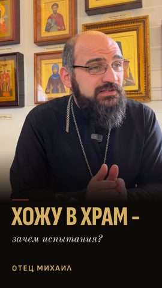
Чтобы научиться любить, границы сердца нужно расширять, и расширяется оно только через испытания. В Евангелии Господь - виноградарь, который обрезает ветки, чтобы лоза дала больше плода. Так Он воспитывает и наше сердце. Иначе можно десятилетиями ходить в храм, не меняться и каким был скрягой, таким и остаться до смерти. Читать книжки и молиться хорошо, но христианство ещё надо практиковать. Годами ходите в храм, а сердце будто не меняется? #вера #православие #Евангелие #вопросысвященнику #испытания
Хожу в храм - зачем мне испытания? #shorts
Чтобы научиться любить, границы сердца нужно расширять, и расширяется оно только через испытания. В Евангелии Господь - виноградарь, который обрезает ветки, чтобы лоза дала больше плода. Так Он воспитывает и наше сердце. Иначе можно десятилетиями ходить в храм, не меняться и каким был скрягой, таким и остаться до смерти. Читать книжки и молиться хорошо, но христианство ещё надо практиковать. Годами ходите в храм, а сердце будто не меняется? #вера #православие #Евангелие #вопросысвященнику #испытания
вера, православие, Евангелие, вопросы священнику, испытания, отец Михаил, священник
Хожу в храм - зачем мне испытания?
Чтобы научиться любить, границы сердца нужно расширять, и расширяется оно только через испытания. В Евангелии Господь - виноградарь, который обрезает ветки, чтобы лоза дала больше плода. Так Он воспитывает и наше сердце. Иначе можно десятилетиями ходить в храм, не меняться и каким был скрягой, таким и остаться до смерти. Читать книжки и молиться хорошо, но христианство ещё надо практиковать. Годами ходите в храм, а сердце будто не меняется? #вера #православие #Евангелие #вопросысвященнику #испытания
Чтобы научиться любить, границы сердца нужно расширять, и расширяется оно только через испытания. В Евангелии Господь - виноградарь, который обрезает ветки, чтобы лоза дала больше плода. Так Он воспитывает и наше сердце. Иначе можно десятилетиями ходить в храм, не меняться и каким был скрягой, таким и остаться до смерти. Читать книжки и молиться хорошо, но христианство ещё надо практиковать. Годами ходите в храм, а сердце будто не меняется? #вера #православие #Евангелие
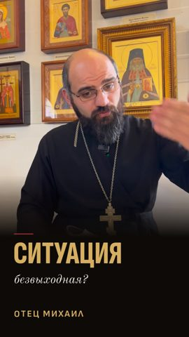
Безвыходная ситуация: где выход Христа искушают вопросом: позволительно ли платить налоги кесарю? Скажет «можно» - станет врагом своему народу, скажет «нельзя» - книжники и фарисеи пойдут к римским властям и назовут Его бунтарём. Кажется, выхода нет, а Он поднимается над ловушкой: «Кесарю кесарево, Богу Богово». Так и в жизни, дорогие: выход есть всегда - через любовь, через крест, через терпение, через внутреннюю борьбу. Зажаты так, что любой шаг кажется ошибкой? Выход есть всегда. #вера #православие #Евангелие #вопросысвященнику
Безвыходная ситуация: где выход #shorts
Христа искушают вопросом: позволительно ли платить налоги кесарю? Скажет «можно» - станет врагом своему народу, скажет «нельзя» - книжники и фарисеи пойдут к римским властям и назовут Его бунтарём. Кажется, выхода нет, а Он поднимается над ловушкой: «Кесарю кесарево, Богу Богово». Так и в жизни, дорогие: выход есть всегда - через любовь, через крест, через терпение, через внутреннюю борьбу. Зажаты так, что любой шаг кажется ошибкой? Выход есть всегда. #вера #православие #Евангелие #вопросысвященнику
вера, православие, Евангелие, вопросы священнику, отец Михаил, священник
Безвыходная ситуация: где выход
Христа искушают вопросом: позволительно ли платить налоги кесарю? Скажет «можно» - станет врагом своему народу, скажет «нельзя» - книжники и фарисеи пойдут к римским властям и назовут Его бунтарём. Кажется, выхода нет, а Он поднимается над ловушкой: «Кесарю кесарево, Богу Богово». Так и в жизни, дорогие: выход есть всегда - через любовь, через крест, через терпение, через внутреннюю борьбу. Зажаты так, что любой шаг кажется ошибкой? Выход есть всегда. #вера #православие #Евангелие #вопросысвященнику
Безвыходная ситуация: где выход Христа искушают вопросом: позволительно ли платить налоги кесарю? Скажет «можно» - станет врагом своему народу, скажет «нельзя» - книжники и фарисеи пойдут к римским властям и назовут Его бунтарём. Кажется, выхода нет, а Он поднимается над ловушкой: «Кесарю кесарево, Богу Богово». Так и в жизни, дорогие: выход есть всегда - через любовь, через крест, через терпение, через внутреннюю борьбу. Зажаты так, что любой шаг кажется ошибкой? Выход есть всегда. #вера #православие #Евангелие
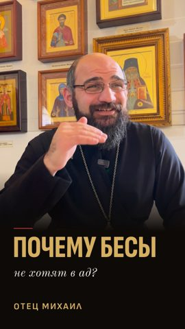
Казалось бы, преисподняя - место бесов, почему же они просятся хотя бы в стадо свиней? Потому что и в мире зла своя иерархия, и там их будут мучить свои. Отсюда урок тому, у кого есть подчинённые: чтобы люди не бежали от вас, как эти бесы - «хоть куда, только не к нему», выстраивать свою иерархию нужно не по закону страха, а по закону любви, в которой другой человек растёт. Руководите людьми и чувствуете, что держатся они только из страха? #вера #православие #Евангелие #вопросысвященнику #руководитель
Почему бесы не хотят в ад #shorts
Казалось бы, преисподняя - место бесов, почему же они просятся хотя бы в стадо свиней? Потому что и в мире зла своя иерархия, и там их будут мучить свои. Отсюда урок тому, у кого есть подчинённые: чтобы люди не бежали от вас, как эти бесы - «хоть куда, только не к нему», выстраивать свою иерархию нужно не по закону страха, а по закону любви, в которой другой человек растёт. Руководите людьми и чувствуете, что держатся они только из страха? #вера #православие #Евангелие #вопросысвященнику #руководитель
вера, православие, Евангелие, вопросы священнику, руководитель, отец Михаил, священник
Почему бесы не хотят в ад
Казалось бы, преисподняя - место бесов, почему же они просятся хотя бы в стадо свиней? Потому что и в мире зла своя иерархия, и там их будут мучить свои. Отсюда урок тому, у кого есть подчинённые: чтобы люди не бежали от вас, как эти бесы - «хоть куда, только не к нему», выстраивать свою иерархию нужно не по закону страха, а по закону любви, в которой другой человек растёт. Руководите людьми и чувствуете, что держатся они только из страха? #вера #православие #Евангелие #вопросысвященнику #руководитель
Казалось бы, преисподняя - место бесов, почему же они просятся хотя бы в стадо свиней? Потому что и в мире зла своя иерархия, и там их будут мучить свои. Отсюда урок тому, у кого есть подчинённые: чтобы люди не бежали от вас, как эти бесы - «хоть куда, только не к нему», выстраивать свою иерархию нужно не по закону страха, а по закону любви, в которой другой человек растёт. Руководите людьми и чувствуете, что держатся они только из страха? #вера #православие #Евангелие
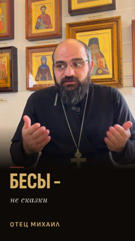
В разговоре о злых силах нужна христианская трезвость: это не сказочки, бесы действительно есть и действительно мучают людей. У меня было два случая, когда приходили женщины с очень сильным беснованием. Одну из них я знаю и понимаю: это не расшатанная психика и не шизофрения, а здоровый человек, которому выпало такое духовное испытание. Не знаете, верить ли в бесов или это всё страшилки? #вера #православие #Евангелие #вопросысвященнику #бесы
Бесы - это не сказки #shorts
В разговоре о злых силах нужна христианская трезвость: это не сказочки, бесы действительно есть и действительно мучают людей. У меня было два случая, когда приходили женщины с очень сильным беснованием. Одну из них я знаю и понимаю: это не расшатанная психика и не шизофрения, а здоровый человек, которому выпало такое духовное испытание. Не знаете, верить ли в бесов или это всё страшилки? #вера #православие #Евангелие #вопросысвященнику #бесы
вера, православие, Евангелие, вопросы священнику, бесы, отец Михаил, священник
Бесы - это не сказки
В разговоре о злых силах нужна христианская трезвость: это не сказочки, бесы действительно есть и действительно мучают людей. У меня было два случая, когда приходили женщины с очень сильным беснованием. Одну из них я знаю и понимаю: это не расшатанная психика и не шизофрения, а здоровый человек, которому выпало такое духовное испытание. Не знаете, верить ли в бесов или это всё страшилки? #вера #православие #Евангелие #вопросысвященнику #бесы
В разговоре о злых силах нужна христианская трезвость: это не сказочки, бесы действительно есть и действительно мучают людей. У меня было два случая, когда приходили женщины с очень сильным беснованием. Одну из них я знаю и понимаю: это не расшатанная психика и не шизофрения, а здоровый человек, которому выпало такое духовное испытание. Не знаете, верить ли в бесов или это всё страшилки? #вера #православие #Евангелие
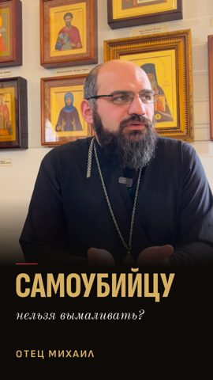
В советах старцев обращают внимание: самоубийцу нельзя вымаливать, и на проскомидию за него не подают, потому что человек, лишив себя жизни, становится принадлежащим дьяволу. Но в свою меру молиться всё равно надо, если это твой ребёнок. У одной матери беснование началось, когда после самоубийства сына она взялась вымаливать его с материнским самозабвением. Близкий человек сам ушёл из жизни, и болит вопрос, можно ли о нём молиться? В свою меру молиться надо. #вера #православие #Евангелие #вопросысвященнику #молитва
Почему самоубийцу нельзя вымаливать #shorts
В советах старцев обращают внимание: самоубийцу нельзя вымаливать, и на проскомидию за него не подают, потому что человек, лишив себя жизни, становится принадлежащим дьяволу. Но в свою меру молиться всё равно надо, если это твой ребёнок. У одной матери беснование началось, когда после самоубийства сына она взялась вымаливать его с материнским самозабвением. Близкий человек сам ушёл из жизни, и болит вопрос, можно ли о нём молиться? В свою меру молиться надо. #вера #православие #Евангелие #вопросысвященнику #молитва
вера, православие, Евангелие, вопросы священнику, молитва, отец Михаил, священник
Почему самоубийцу нельзя вымаливать
В советах старцев обращают внимание: самоубийцу нельзя вымаливать, и на проскомидию за него не подают, потому что человек, лишив себя жизни, становится принадлежащим дьяволу. Но в свою меру молиться всё равно надо, если это твой ребёнок. У одной матери беснование началось, когда после самоубийства сына она взялась вымаливать его с материнским самозабвением. Близкий человек сам ушёл из жизни, и болит вопрос, можно ли о нём молиться? В свою меру молиться надо. #вера #православие #Евангелие #вопросысвященнику #молитва
В советах старцев обращают внимание: самоубийцу нельзя вымаливать, и на проскомидию за него не подают, потому что человек, лишив себя жизни, становится принадлежащим дьяволу. Но в свою меру молиться всё равно надо, если это твой ребёнок. У одной матери беснование началось, когда после самоубийства сына она взялась вымаливать его с материнским самозабвением. Близкий человек сам ушёл из жизни, и болит вопрос, можно ли о нём молиться? В свою меру молиться надо. #вера #православие #Евангелие
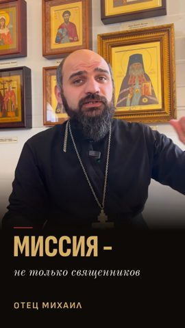
Мы, священники, немощные: нас раз-два и обчёлся, и то две калеки, сами не справимся. Миссия - дело каждого христианина, апостольское служение касается каждого на своём месте: жить так, чтобы люди поражались и спрашивали, как так можно, - а можно, в любви и только с Богом. Недавно услышал у отца Андрея Ткачёва: если на вас никогда не смотрели как на ненормальных, ваше христианство просто размазано по жизни. Думаете, говорить людям о Христе - дело священников? #вера #православие #Евангелие #вопросысвященнику #миссия
Миссия - не только дело священников #shorts
Мы, священники, немощные: нас раз-два и обчёлся, и то две калеки, сами не справимся. Миссия - дело каждого христианина, апостольское служение касается каждого на своём месте: жить так, чтобы люди поражались и спрашивали, как так можно, - а можно, в любви и только с Богом. Недавно услышал у отца Андрея Ткачёва: если на вас никогда не смотрели как на ненормальных, ваше христианство просто размазано по жизни. Думаете, говорить людям о Христе - дело священников? #вера #православие #Евангелие #вопросысвященнику #миссия
вера, православие, Евангелие, вопросы священнику, миссия, отец Михаил, священник
Миссия - не только дело священников
Мы, священники, немощные: нас раз-два и обчёлся, и то две калеки, сами не справимся. Миссия - дело каждого христианина, апостольское служение касается каждого на своём месте: жить так, чтобы люди поражались и спрашивали, как так можно, - а можно, в любви и только с Богом. Недавно услышал у отца Андрея Ткачёва: если на вас никогда не смотрели как на ненормальных, ваше христианство просто размазано по жизни. Думаете, говорить людям о Христе - дело священников? #вера #православие #Евангелие #вопросысвященнику #миссия
Мы, священники, немощные: нас раз-два и обчёлся, и то две калеки, сами не справимся. Миссия - дело каждого христианина, апостольское служение касается каждого на своём месте: жить так, чтобы люди поражались и спрашивали, как так можно, - а можно, в любви и только с Богом. Недавно услышал у отца Андрея Ткачёва: если на вас никогда не смотрели как на ненормальных, ваше христианство просто размазано по жизни. Думаете, говорить людям о Христе - дело священников? #вера #православие #Евангелие
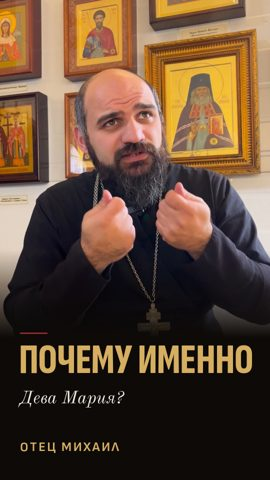
Что привлекло внимание Бога к Пречистой Деве? Одно качество - смирение. Она сама сказала: «Яко призре на смирение рабы Своея». Вся история Ветхого Завета, вся забота Бога об одном-единственном богоизбранном народе была ради того, чтобы в нём родилась Пречистая Дева, которая смогла удостоиться стать Божьей Матерью. Мешает собственная гордость? Посмотрите на Пречистую Деву. Подпишитесь. #вера #православие #Евангелие #вопросысвященнику #Богородица
Почему Бог выбрал Деву Марию #shorts
Что привлекло внимание Бога к Пречистой Деве? Одно качество - смирение. Она сама сказала: «Яко призре на смирение рабы Своея». Вся история Ветхого Завета, вся забота Бога об одном-единственном богоизбранном народе была ради того, чтобы в нём родилась Пречистая Дева, которая смогла удостоиться стать Божьей Матерью. Мешает собственная гордость? Посмотрите на Пречистую Деву. Подпишитесь. #вера #православие #Евангелие #вопросысвященнику #Богородица
вера, православие, Евангелие, вопросы священнику, Богородица, отец Михаил, священник
Почему Бог выбрал Деву Марию
Что привлекло внимание Бога к Пречистой Деве? Одно качество - смирение. Она сама сказала: «Яко призре на смирение рабы Своея». Вся история Ветхого Завета, вся забота Бога об одном-единственном богоизбранном народе была ради того, чтобы в нём родилась Пречистая Дева, которая смогла удостоиться стать Божьей Матерью. Мешает собственная гордость? Посмотрите на Пречистую Деву. Подпишитесь. #вера #православие #Евангелие #вопросысвященнику #Богородица
Что привлекло внимание Бога к Пречистой Деве? Одно качество - смирение. Она сама сказала: «Яко призре на смирение рабы Своея». Вся история Ветхого Завета, вся забота Бога об одном-единственном богоизбранном народе была ради того, чтобы в нём родилась Пречистая Дева, которая смогла удостоиться стать Божьей Матерью. Мешает собственная гордость? Посмотрите на Пречистую Деву. Подпишитесь. #вера #православие #Евангелие
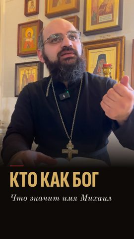
Имя Михаил - знаете, как переводится? Микаэль: «Кто как Бог?» Самый светлый ангел сказал: «Я как Бог» - и пал. Архангел Михаил восстал на эти слова. «Либо как дьявол, либо как архангел Михаил». Кто сейчас сидит на престоле вашего сердца? Телеграм - ссылка в профиле. #вера #православие #Евангелие #вопросысвященнику #АрхангелМихаил
Кто как Бог? Что значит имя Михаил #shorts
Микаэль - «Кто как Бог?». Денница сказал: «Я как Бог» - и не захотел служить. Архангел Михаил восстал на эти слова. И у каждой души те же два пути: на престоле сердца страсти - или Господь. Кто сейчас сидит на престоле вашего сердца? Телеграм-канал: t.me/Ecclesiast_M #вера #православие #Евангелие #вопросысвященнику #АрхангелМихаил
вера, православие, Евангелие, вопросысвященнику, АрхангелМихаил, отец Михаил, священник
Кто как Бог? Что значит имя Михаил
Имя Михаил - знаете, как переводится? Микаэль: «Кто как Бог?» Самый светлый ангел сказал: «Я как Бог» - и пал. Архангел Михаил восстал на эти слова. У каждой души те же два пути: на престоле сердца страсти - или Господь. Кто сейчас сидит на престоле вашего сердца? Телеграм-канал: t.me/Ecclesiast_M #вера #православие #Евангелие #вопросысвященнику #АрхангелМихаил
Имя Михаил - знаете, как переводится? Микаэль: «Кто как Бог?» Самый светлый ангел сказал: «Я как Бог» - и пал. Архангел Михаил восстал на эти слова. У каждой души те же два пути: на престоле сердца страсти - или Господь. Кто сейчас сидит на престоле вашего сердца? #вера #православие #Евангелие
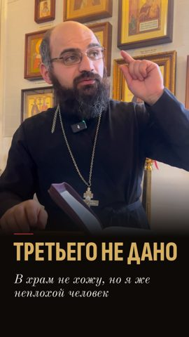
«В храм не хожу, но я же неплохой человек». Когда треть ангелов пошла за дьяволом, не было тех, кто воздержался. «Кто не со Мной, тот против Меня». «Нет духовно-нейтральной позиции». Думали, что можно просто быть хорошим человеком без Бога? Телеграм - ссылка в профиле. #вера #православие #Евангелие #вопросысвященнику #третьегонедано
«Я же неплохой человек» - третьего не дано #shorts
«В храм не хожу, но я же неплохой человек». Когда треть ангелов пошла за дьяволом, не было ангелов, которые воздержались. «Кто не со Мной, тот против Меня». Духовно-нейтральной позиции нет. Думали, что можно просто быть хорошим человеком без Бога? Телеграм-канал: t.me/Ecclesiast_M #вера #православие #Евангелие #вопросысвященнику
вера, православие, Евангелие, вопросысвященнику, третьегонедано, отец Михаил, священник
«Я же неплохой человек» - третьего не дано
«В храм не хожу, но я же неплохой человек». Так думают многие. Когда треть ангелов пошла за дьяволом, не было тех, кто воздержался. И Господь говорит: «Кто не со Мной, тот против Меня». Духовно-нейтральной позиции нет. Думали, что можно просто быть хорошим человеком без Бога? Телеграм-канал: t.me/Ecclesiast_M #вера #православие #Евангелие #вопросысвященнику #третьегонедано
«В храм не хожу, но я же неплохой человек». Так думают многие. Когда треть ангелов пошла за дьяволом, не было тех, кто воздержался. И Господь говорит: «Кто не со Мной, тот против Меня». Духовно-нейтральной позиции нет. Думали, что можно просто быть хорошим человеком без Бога? #вера #православие #Евангелие
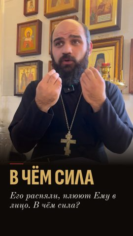
Его распяли, плюют Ему в лицо. В чём сила? В Откровении Иоанн слышит: «Это Лев от колена Иудина» - а видит Агнца. «Сила не осуждать, сила не ответить… злом на зло. Но ты можешь это делать только с Богом». Что для вас сила? Телеграм - ссылка в профиле. #вера #православие #Евангелие #вопросысвященнику #сила
Его распяли - в чём сила? Агнец, Который - Лев #shorts
До Христа сила - это доминирование. В Откровении Иоанн видит Агнца, а старец говорит ему: «Это Лев от колена Иудина». Распятого Христа мир не понимает как силу. А сила - не осуждать и не отвечать злом на зло. Что для вас сила? Телеграм-канал: t.me/Ecclesiast_M #вера #православие #Евангелие #вопросысвященнику
вера, православие, Евангелие, вопросысвященнику, сила, отец Михаил, священник
Его распяли - в чём сила? Агнец, Который - Лев
Его распяли, плюют Ему в лицо. В чём сила? Нам, мужчинам, трудно это понять: чтобы вырасти, мы шли по мирской силе. А в Откровении Иоанн слышит: «Это Лев от колена Иудина» - но видит Агнца. Сила - не осуждать и не отвечать злом на зло. И это можно только с Богом. Что для вас сила? Телеграм-канал: t.me/Ecclesiast_M #вера #православие #Евангелие #вопросысвященнику #сила
Его распяли, плюют Ему в лицо. В чём сила? Нам, мужчинам, трудно это понять: чтобы вырасти, мы шли по мирской силе. А в Откровении Иоанн слышит: «Это Лев от колена Иудина» - но видит Агнца. Сила - не осуждать и не отвечать злом на зло. И это можно только с Богом. Что для вас сила? #вера #православие #Евангелие
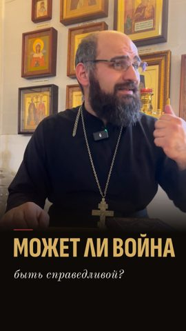
Может ли быть справедливая война на земле? Святой Патриарх Павел Сербский: если на небе была справедливая война, почему на земле не может быть? «Но в моей духовной жизни другие законы силы». Где для вас граница между защитой и местью? Телеграм - ссылка в профиле. #вера #православие #Евангелие #вопросысвященнику #АрхангелМихаил
Может ли война быть справедливой? Патриарх Павел Сербский #shorts
«Если на небе была справедливая война, почему на земле не может быть?» - слова святого Патриарха Павла Сербского. Защищать семью, землю и народ - воля Божья. А в духовной жизни другие законы силы: благодать получает тот, кто воздерживается. Где для вас граница между защитой и местью? Телеграм-канал: t.me/Ecclesiast_M #вера #православие #Евангелие #вопросысвященнику
вера, православие, Евангелие, вопросысвященнику, АрхангелМихаил, отец Михаил, священник
Может ли война быть справедливой? Патриарх Павел Сербский
Может ли быть справедливая война на земле, если на небе была справедливая война? Так говорил святой Патриарх Павел Сербский. Если враг идёт на семью, на землю, на народ - надо воевать. А в духовной жизни - другие законы силы: тот, кто воздерживается от ответа, получает благодать. Где для вас граница между защитой и местью? Телеграм-канал: t.me/Ecclesiast_M #вера #православие #Евангелие #вопросысвященнику #АрхангелМихаил
Может ли быть справедливая война на земле, если на небе была справедливая война? Так говорил святой Патриарх Павел Сербский. Если враг идёт на семью, на землю, на народ - надо воевать. А в духовной жизни - другие законы силы: тот, кто воздерживается от ответа, получает благодать. Где для вас граница между защитой и местью? #вера #православие #Евангелие
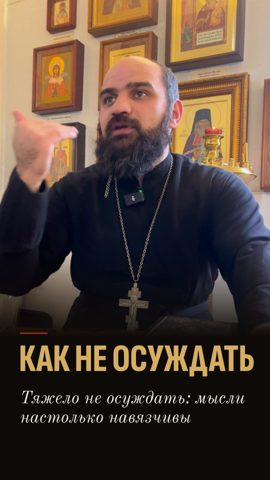
Тяжело не осуждать: мысли настолько навязчивы. «Мне хотя бы Богу надо показать борьбу… Господи, я сам не могу остановиться, осуждаю. Прошу, мне помоги». Совет святителя Игнатия Брянчанинова: «Господи, этот человек лучше меня, я хуже его». О ком вы сегодня подумали с осуждением? Телеграм - ссылка в профиле. #вера #православие #Евангелие #вопросысвященнику #осуждение
Не могу перестать осуждать. Что делать? #shorts
Умом понимаешь, что осуждать не нужно, а мысли навязчивы. Нужно хотя бы показать Богу борьбу и молиться Иисусовой молитвой. А святитель Игнатий Брянчанинов советует проговаривать: «Господи, этот человек лучше меня, я хуже его». О ком вы сегодня подумали с осуждением? Телеграм-канал: t.me/Ecclesiast_M #вера #православие #Евангелие #вопросысвященнику
вера, православие, Евангелие, вопросысвященнику, осуждение, отец Михаил, священник
Не могу перестать осуждать. Что делать?
Умом понимаешь, что осуждать не нужно, а мысли навязчивы - и чувствуешь беспомощность. Хотя бы показать Богу борьбу: «Господи, я сам не могу остановиться, осуждаю. Прошу, мне помоги». Иисусова молитва. И совет святителя Игнатия Брянчанинова - проговаривать: «Господи, этот человек лучше меня, я хуже его». О ком вы сегодня подумали с осуждением? Телеграм-канал: t.me/Ecclesiast_M #вера #православие #Евангелие #вопросысвященнику #осуждение
Умом понимаешь, что осуждать не нужно, а мысли навязчивы - и чувствуешь беспомощность. Хотя бы показать Богу борьбу: «Господи, я сам не могу остановиться, осуждаю. Прошу, мне помоги». Иисусова молитва. И совет святителя Игнатия Брянчанинова - проговаривать: «Господи, этот человек лучше меня, я хуже его». О ком вы сегодня подумали с осуждением? #вера #православие #Евангелие